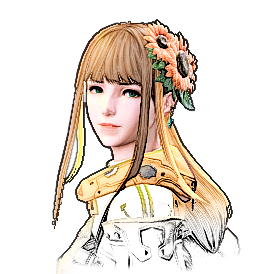

光之战士一时间说不出话来。
她只有十六岁？！
痛痛痛……阿莉塞，你听我解释，我跟她真的没什么！我昨天才第一次见到她！
看来你在阿卡狄亚的生活比我们想象的要丰富得多。
怎么连你也……
原来大英雄喜欢这样的人……像向日葵永远指着太阳一样，细细想来倒确实很是相配……以后我会多多注意的。
我都说了是假的啊！
真是知人知面不知心，物证在前还敢否认……
好啦大家，玩笑就先放一放吧。亚历山德里亚的国民正身处风险之中，我们还是先继续翻下去，早日查清案件吧！
克莉缇 ♀ 16
灵魂：龟背竹 战士
-浅棕发带一点橙色的挑染，长发，绿瞳。
-前任阿卡迪亚斗士，因灵魂坏死症退赛，后被从天而降的新星斗士救下。
-光的地下恋人（懂的都懂，他身份特殊，不能公开）
-锚点：橙黄色的向日葵头花
变身后可以向前方大范围喷射毒液！
略略略，把你们全都喷死
